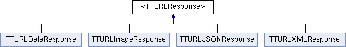

<TTURLResponse> Protocol Reference
A response protocol for TTURLRequest. More...
#import <TTURLResponse.h>
Inheritance diagram for <TTURLResponse>:

Public Member Functions | |
| (NSError *) | - request:processResponse:data: |
| Processes the data from a successful request and determines if it is valid. | |
Detailed Description
A response protocol for TTURLRequest.
This protocol is used upon the successful retrieval of data from a TTURLRequest. The processResponse method is used to process the data, whether it be an image or an XML string.
- See also:
- TTURLDataResponse
- TTURLImageResponse
Member Function Documentation
| - (NSError*) request: | (TTURLRequest *) | request | ||
| processResponse: | (NSHTTPURLResponse *) | response | ||
| data: | (id) | data | ||
[required] |
Processes the data from a successful request and determines if it is valid.
If the data is not valid, return an error. The data will not be cached if there is an error.
- Parameters:
-
request The request this response is bound to. response The response object, useful for getting the status code. data The data received from the TTURLRequest.
- Returns:
- NSError if there was an error parsing the data. nil otherwise.
The documentation for this protocol was generated from the following file:
- Three20Network/Headers/TTURLResponse.h